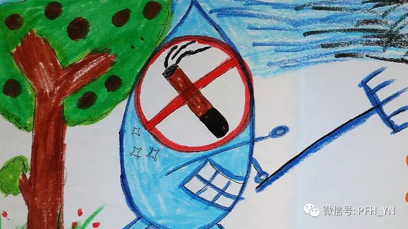

吸烟导致的口腔疾病是一个普遍而又很容易被忽视的问题。
朱红，云南省口腔医院口腔内科主任医师。在近30年的临床工作中，她见过太多的因牙周疾病前来就诊的病人。基于多年的临床经验，她深切的体会到要从根本上治愈牙周疾病，最重要的是病人自身要坚持健康的生活方式，其中最重要的是要戒烟。
我做牙科医生29年了，接触的都是牙周病病人。牙周病直接影响到牙齿的健康，因为牙周病就是发生在牙齿周围支持组织的疾病，这个支持组织是牙齿生长和稳固的基础。如果把牙比喻为一棵树，那么牙周就像土壤，如果树周围的土壤发生水土流失，树就会松动，甚至倒下。
在医学上，我们认为导致牙周病的因素有始动因子和促进因子。始动因子是牙菌斑，这是导致牙周病的主要原因。发生原理就是口腔内的细菌聚集形成牙菌斑产生毒素，引起牙龈炎症和牙槽骨的吸收破坏。很多病人误认为牙龈出血是缺乏维生素，实际上是牙菌斑在作祟。
促进因子又叫作危险因素，包括吸烟、糖尿病、精神紧张等，危险因素的存在，会增加患牙周病的风险。现代医学已经证明，吸烟与牙周疾病的关系非常密切。我在临床上观察到，吸烟的牙周病患者，有牙龈萎缩等病患的部位常靠近舌头一面，而不是靠近唇颊面。这间接地说明了吸烟对牙周的影响，因为靠近舌头一侧的牙龈更多的直接暴露于烟草烟雾。
我接诊过的男性牙周病病人十之八九都吸烟，这从他们牙齿上黑乎乎的烟斑就可以知道。他们来就诊的时候，大多数的牙周病都已经很严重了。这是因为烟草中的尼古丁会导致血管收缩，因此很多病人感觉不到牙龈出血或牙龈肿胀，病人也因而失去了早诊断早治疗的机会，给后面的治疗和康复带来很多的隐患。我们也遇到过一些前来诊治牙周疾病的病人，已经出现口腔白斑（癌前病变），需要转到别的科室进行特殊治疗。
印象中，有一位四五十岁的病人，平时抽烟很厉害，来就诊时牙齿已经松动，属于牙周病中期，但还有治疗机会。治疗后我明确告诉他必须戒烟，否则难保治疗效果。他回答说做不到。果然，在那次治疗后不到三年，他再次来看病，牙周疾病已经到了晚期，全口的牙齿都松动了。我只好说，“我救不了你，只能拔牙。”许多病人就是这样逐渐失去了牙齿的，在他们不到60岁时，就只能镶上假牙度日了。
其实牙周病是可以预防的。只要养成良好的生活规律，坚持每天三次认真刷牙，用牙刷或牙线仔细清洁牙面，及时的去除牙菌斑，阻止牙菌斑的钙化，就可以大大降低患牙周病的可能性。另外，不吸烟，缓解精神压力等都有助于预防牙周病。
作为一名资深的牙周病医生，我深深知道保护牙周重在预防，因此我接诊病人时都要询问吸烟史，并总是劝吸烟者戒烟，同时告知他们坚持口腔保健的重要性。但遗憾的是，能认真听从这些劝戒的病人太少了，30年来我的病人中，真正改变行为的不超过20个人。但这些为数不多的病人，在改变自身行为之后，都取得了不错的治疗效果。有一位在戒烟后牙齿健康维护得很好，还主动做起了义务宣传员，劝别的牙周病患者戒烟。
我觉得，目前我国的口腔健康知识普及程度太低，公众缺乏口腔保健的知识，不知道吸烟会导致牙周疾病，甚至导致口腔癌，因而忽略了口腔健康。通常，大家会觉得牙齿问题不会威胁生命，因此也引不起重视。如果是得了高血压、心脏病，他们可能就不得不戒烟了。
为了更多患者的健康，我一直坚持在临床工作中告诉病人，治疗牙周病的第一个医生是专科医生，第二个医生是病人自己。下决心戒烟，保持良好的健康行为，治愈牙周病才有希望。
采访后记：
在朱红医生的诊室里，听她讲述有关吸烟和口腔健康的关系，感到上了一节健康教育课，让我明白了吸烟导致的口腔疾病是一个普遍而又很容易被忽视的问题。讲解中，她和她的年轻同事现场向我们展示了一些吸烟者的口腔疾病照片，那些“丑陋”的口腔让我联想起许多国家烟盒包装上的图形健康警示。不禁想，中国的烟盒包装上也能放上“吸烟导致口腔疾病”的图片，让更多的人知道吸烟危害的话，那对朱红医生多年的努力和坚持也会是一种告慰。